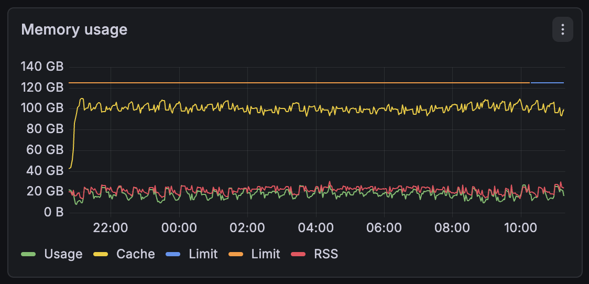
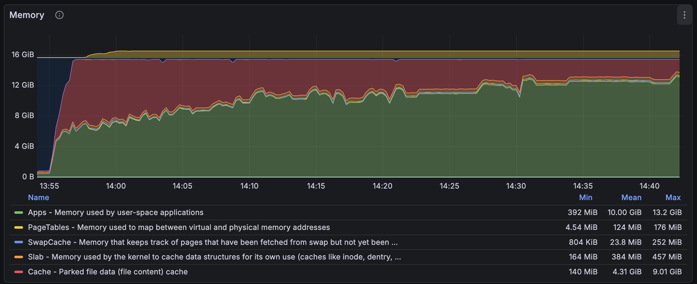
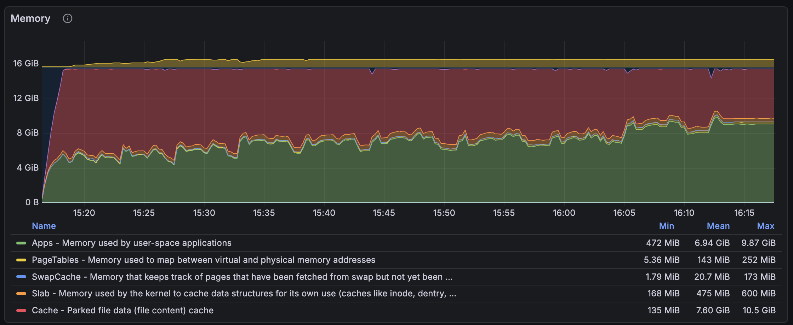
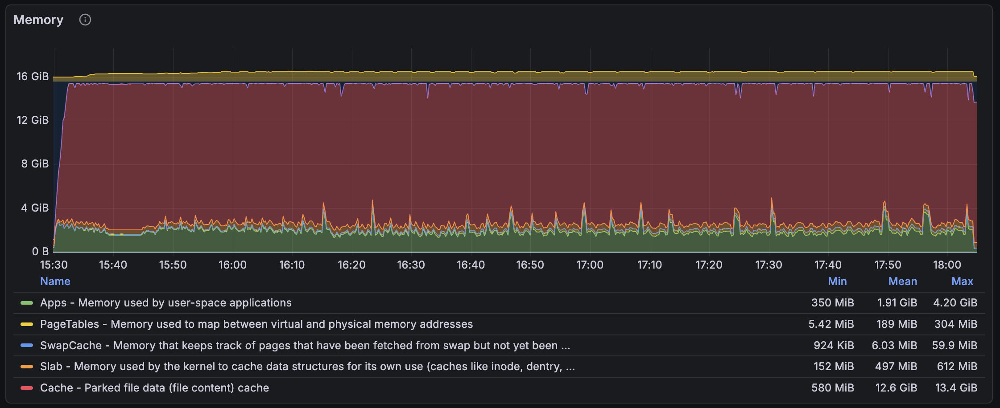
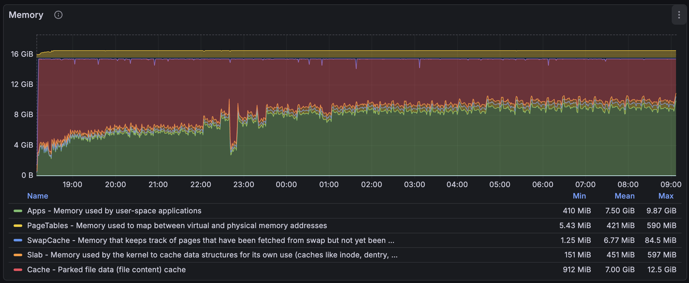
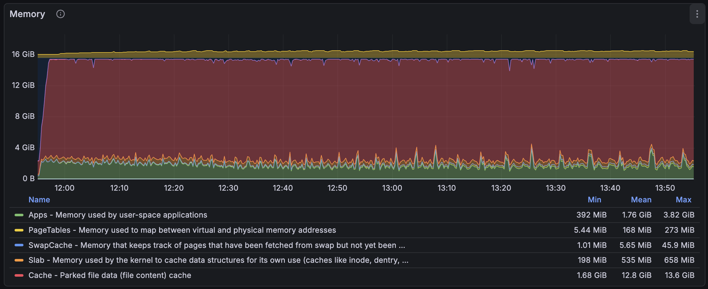
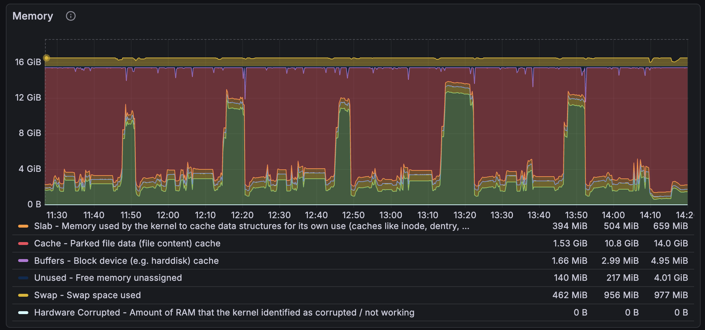

The Good, the Bad, and the Leaky: jemalloc, bumpalo, and mimalloc in meilisearch
It's been some time since a couple of open-source users reported that meilisearch is leaking memory. I spent time reviewing the codebase to see where a leak could have hidden, but I never found anything suspicious enough. I was also very suspicious of those claims, as we are running multiple thousand meilisearch instances on our Cloud and have never had any leaking issues that caused instances to be killed by the OS...
...actually, yes, we had a leak in v1.25, but it was related to an LMDB feature I was developing back then, and I talked about this in another blog post. This is fixed now, and it was entirely my fault to dive into a complex C codebase and deploy a spooky change without extensive testing.
I also investigated meilisearch on the Cloud and always found that meilisearch wasn't leaking memory in any way. As you can see below, this is the memory usage of one of a customer who is heavily indexing embeddings and keywords. No apparent leak while they have tens of millions of documents on this machine (part of a sharded cluster).

But one day, I noticed something similar to what was reported: meilisearch was using more and more resident memory. Resident memory, also known as RSS, is the memory allocated by the OS that resides in RAM, unlike virtual (VRT) memory, which often comes from memory-mapped files and is allocated on demand. RSS memory comes from calls to the mmap syscall with the MAP_ANONYMOUS option. That's what your allocator does when you malloc something if there are no pages already allocated.

That's what I saw when indexing millions of small documents in meilisearch. So I decided to dive into the rabbit hole and find this leak. In Rust, I thought it was very obvious to detect leaks because it often comes from explicit calls to the mem::forget function. Unfortunately, we don't have any explicit call to it.
jemalloc to the Rescue
We used jemalloc for a long time before we switched to mimalloc. The main reason was about performance and Windows and macOS compatibility. We thought mimalloc would work better with Windows, as it is a Microsoft project, but we were eventually proven wrong and disabled mimalloc on Windows. Still, we were able to use mimalloc on macOS this time. The story repeats itself, and on Windows, meilisearch uses the default allocator.
However, jemalloc is a very performant allocator, better in every way than macOS's default allocator, for sure 👓, and, most importantly, it has very helpful tools to track leaks and heap allocations. I changed meilisearch's global allocator back to jemalloc, enabled the profiling feature, and generated a couple (too many) SVG outputs of memory tracking.
The SVG showed around 100 MiB being leaked in some part of the code I recently modified. New code is often the source of new bugs, so I reviewed my code more thoroughly, and I invite you to do the same because I am very proud of it. Long story short, there was no memory leak introduced in my PR, yet the report still references this code.
I am not a very prominent user of AI Agents. I use Zed, right, but not for its AI-related features, but more because I love Rust, and this editor is quite good. As the Zed team is using Zed to work on the Zed codebase, they worked hard on the Rust analyzer integration and the debugger. That's a breeze compared to Sublime Text's bad Rust integration and VSCode's browser slowness and resource usage.
End of digression. I still decided to get a little help from an LLM to see where it could lead me. I generated a text report from a jemalloc heap analysis, and I gave it to my Zed Claude Sonnet 4.5 Agent... It impressively found multiple leaks in the codebase, approximately four. Rest assured, only one was an actual leak, yes... AI, you know. Still, the one it found was an actual leak.
The Trap of Bumpalo
You may know about Bumpalo. It's a bump allocator library. The main goal is to reduce pressure on allocators (e.g., mimalloc, jemalloc) by allocating memory chunks that are freed only when the Bump object is dropped. We use this in meilisearch to perform many small allocations (e.g., document IDs, field names) and retain them throughout indexation, avoiding numerous small, scattered allocations that could lead to cache-unfriendly patterns and slowness.
The main trap with bumpalo is our use of bumpalo::Vec::into_bump_slice. This method takes an allocated vector and converts it into the underlying slice. This slice can be used safely and is not even considered a leak, since its lifetime is the Bump one. Which means that the slice will be deallocated when the underlying memory chunk owned by the Bump is dropped. However, there is a catch here. When converting a bumpalo::Vec to a slice, the slice never runs the drop glue, and we were storing a global-allocator-backed data structure, i.e., an std::Vec, in this bumpalo::Vec. What a mistake. You can review the patch for the AI-assisted-discovered leak.
I felt relieved after I finally fixed this longstanding bug. It was there since v1.12, which was approximately 1.5 years ago. All this time, and nobody noticed that. We were wondering whether bumpalo was "at fault" here and whether the bumpalo::Vec should only accept storing structures that implement a specific bumpalo::Drop trait. However, implementing that seemed very complex. So, I started measuring the memory usage of meilisearch again with the clear leak fixed...

What the heck?! I checked whether I was using a pre-patch binary, and no, there was still a huge increase in memory usage. My patch actually changed nothing. Someone could easily fall into dementia, but I cooled down and tried using my "super-powered" AI agent. This time, it found nothing.
The Downsides of Using Non-Rust Dependencies
Meilisearch uses LMDB, a lightning-fast memory-mapped key-value store, to store and operate its internal indexes. We store the inverted index for our search engine to serve search requests, and thanks to its implementation of multi-version concurrency control (MVCC), we can serve search requests while updating the internal data structures. It's probably the most important dependency in the engine, and we put a lot of pressure on it. Note that this library is in C.
In C, you said? Yes, and that's part of the answer to our memory leak. Meilisearch is statically linked with LMDB, and meilisearch also uses mimalloc as the global allocator. But LMDB doesn't use mimalloc and relies on the default allocator, which means the system allocator. Long story short, LMDB is allocating and deallocating pages that meilisearch cannot reuse because both allocators are not cooperating, and that's the main clue to this mystery.
I decided to remove the custom global allocator in meilisearch and set LD_PRELOAD (which is an environment variable used to load shared libraries before others, and in this case, replace the allocator), and jemalloc with profiling enabled, so I can get a good report to provide to my "super-powered" AI agent. I already dove into LMDB before, and some allocation-related parts looked quite spooky to me. I tend not to like this kind of unbounded linked-list of page-size allocations.

Wow! The goal wasn't to drastically reduce memory allocations by using jemalloc, but rather to extract a report. This is very interesting, as when using jemalloc, we can clearly see that no leak appears. The main change here was to use a single memory allocator for both meilisearch and LMDB to enable LMDB auditing, since I was only enabling jemalloc profiling for the meilisearch application before. It seems that the leak has been resolved by unifying them. I extracted a report, and it didn't even show the spooky linked list I talked about before, no actual leak of any kind.
Using Mimalloc Everywhere
So, I tried using mimalloc instead of jemalloc to see how meilisearch behaves when it shares its allocations with LMDB, and... the result wasn't very convincing; the leak is back. The issue seemed to arise only with mimalloc, not with jemalloc. I looked up on the internet and found out that the amazing team behind mimalloc was actually working on a v3. We were using v2, the version available on main.

I compiled mimalloc v3 and LD_PRELOAD it in meilisearch, and the result was much, much better. As you can see, it is now close to jemalloc's memory usage. I found out later that the override mimalloc's feature existed, and its goal was to force every allocator call to link to mimalloc and enable it. I also used the nm command to verify that the different malloc symbols pointed to the mi_malloc symbols.

According to the documentation, mimalloc v3 is much better at sharing memory between threads and promises a (much) lower memory usage for certain large workloads. I think indexing documents with meilisearch falls into this category, then. We also probably benefit from other features, such as the simplified lock-free design and support for true first-class heaps. I don't know what the latter two features do, but they seem very beneficial to our workload.
We ran some benchmarks to see if everything was good, and it resulted in very good performance gains. We had some gains of about 13% and some losses of about 9%, but those are necessary tradeoffs. Note that those benchmarks are run on a dedicated NVMe machine. In the Cloud, most of our customers use network disks, and performance gains will be even more visible with higher-latency disks, e.g., AWS EBS.
The most important thing is that the memory usage is much lower than before. Our systems have limited RAM, and the disks are slow (especially network disks). You prefer not to fetch the disk every time you access a page and instead rely on the page cache. That's why reducing our RSS frees up more memory for the page cache and reduces disk reads, ultimately improving performance. There is still a tradeoff between munmapping memory too often or too early compared to keeping the memory, but mimalloc v3 seems very efficient at managing this tradeoff.

After testing the engine for some time with mimalloc v3, I still see some spikes in particularly heavy-indexing parts, but it's much easier to see where we can improve the engine without RSS noise as we had before. The story continues, but it will mostly focus on engine-side optimizations to reduce allocation loads rather than "meta" changes to the engine.
This blog post has been handcrafted by using my own wording and thoughts 🌱